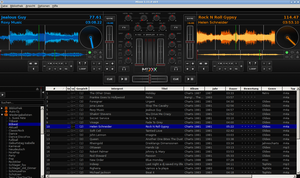

Mixxx
Dieser Artikel wurde für die folgenden Ubuntu-Versionen getestet:
Ubuntu 16.04 Xenial Xerus
Ubuntu 14.04 Trusty Tahr
Zum Verständnis dieses Artikels sind folgende Seiten hilfreich:
Mixxx  ist ein Programm, das - wie der Name schon vermuten lässt - zum Mixen von Musik entwickelt wird. Ehemals auf rudimentäre Funktionen beschränkt, ist es inzwischen zu einer umfangreichen Anwendung herangewachsen, die sich durchaus mit proprietären Alternativen im Bereich der DJ-Software vergleichen lässt.
ist ein Programm, das - wie der Name schon vermuten lässt - zum Mixen von Musik entwickelt wird. Ehemals auf rudimentäre Funktionen beschränkt, ist es inzwischen zu einer umfangreichen Anwendung herangewachsen, die sich durchaus mit proprietären Alternativen im Bereich der DJ-Software vergleichen lässt.

Ausstattung (Ausschnitt):
Synchronisation der BPM
Schnelles Vor- und Rückspulen
Regler für Höhen, Mitten, Tiefen, Gain, Balance, Mastervolume
Kopfhörertaste zum Vorhören (dazu weiter unten)
CUE-Punkt und Hotcue-Punkte setzen (automatisches Setzen auf den Beat ab Version 1.10.0 möglich)
Geschwindigkeit ändern (bis zu 100% / stufenlos / mit und ohne Änderung der Tonhöhe)
Flanger
Auto-DJ Funktion
Native Unterstützung von Mp3, Ogg Vorbis, FLAC, WAVe und AIFF, weitere Formate sind per Plugin nachrüstbar
Möglichkeit, den eigenen Mix aufzunehmen
Replay Gain (also automatische Normalisieren der Lautstärke)
Umfangreiche Bibliothek, u.a. mit Playlists, Crates, Tag-Support, Bewertungen und Wiedergabezähler
Drag-and-Drop Support
Umfangreiche Skin-Auswahl
Anschlussmöglichkeit für eine Vielfalt von Extra-Hardware
Audio-Live-Übertragung im Netzwerk/Internet über Icecast2 (ab Version 1.9.0)
Mikrofonsupport (ab Version 1.10.0)
Beliebige und taktgenaue Loops (1/32 - 32 Takte) (letzeres ab Version 1.10.0)
Eine vollständige Liste zum Funktionsumfangs findet man auf der Projektseite .
Installation¶
Das folgende Paket muss installiert [1] werden:
mixxx (universe)
 mit apturl
mit apturl
Paketliste zum Kopieren:
sudo apt-get install mixxx
sudo aptitude install mixxx
PPA¶
Die Version aus den offiziellen Paketquellen ist nicht immer aktuell. Die aktuelle stabile Version gibt es in einem "Personal Package Archiv" (PPA) [2]:
Adresszeile zum Hinzufügen des PPAs:
ppa:mixxx/mixxx
Hinweis!
Zusätzliche Fremdquellen können das System gefährden.
Ein PPA unterstützt nicht zwangsläufig alle Ubuntu-Versionen. Weitere Informationen sind der  PPA-Beschreibung des Eigentümers/Teams mixxx zu entnehmen.
PPA-Beschreibung des Eigentümers/Teams mixxx zu entnehmen.
Damit Pakete aus dem PPA genutzt werden können, müssen die Paketquellen neu eingelesen werden.
Nach dem Aktualisieren der Paketquellen erfolgt die Installation wie oben angegeben.
Konfiguration¶
Ersteinrichtung¶
Startet man Mixxx zum ersten Mal, wird man nach dem Speicherort der Musik gefragt. Den dort angegebenen Ort und weitere Einstellungen kann man unter "Options -> Preferences -> Library" ändern.
Verwendete Audioschnittstelle¶
Unter "Options -> Preferences -> Sound Hardware" kann man einstellen, ob Mixxx ALSA oder Jack nutzen soll. Falls man Jack nutzen möchte, sollte man darauf achten, den Jack-Server zuerst zu starten und Mixxx erst danach, weil sonst automatisch auf ALSA umgestellt wird.
Aussehen verändern¶
Die Oberfläche von Mixxx ist derart gestaltet, dass sie nicht dynamisch ihre Größe verändern kann. Um sie dennoch auf allen Oberflächen ansprechend aussehen zu lassen, existieren verschiedene Oberflächen, die sich nicht nur in der Größe, sondern auch in Farbe, Anordnung etc. unterscheiden.
Die vorinstallierten Oberflächen kann man unter "Options -> Preferences -> Interface-> Skin" einstellen. Im Forum von Mixxx finden sich eine Vielzahl weitere Oberflächen, die aber manuell hinzugefügt werden müssen.
Joystick/Mischpult¶
Wenn die Hardware vom System erkannt wird, sollte Mixxx diese ebenfalls erkennen. Für viele Mischpulte sind bereits Voreinstellungen vorhanden , ansonsten kann man diese über eine Schritt-für-Schritt-Einrichtung hinzufügen. Diese beiden Möglichkeiten finden sich im Programm unter "Options -> Preferences -> Midi Controllers".
Hinweis:
Im Forum sind auch inoffizielle Presets vorhanden, die einige Funktion erweitern oder erst ermöglichen.
Erweiterte Konfiguration¶
Bei der erweiterten Konfiguration ist es möglich, per Javascript eine Methode aufzurufen, sobald eine Taste gedrückt, gedreht etc. wird. Es lässt sich also (fast) jede Funktion einbauen.
Bedienung¶
Mixxx wirkt auf den ersten Blick, gerade für den unerfahrenen DJ, etwas unübersichtlich. Um dieses Problem zu beheben, werden ausführliche Kurzinformationen angezeigt, sobald man mit dem Mauszeiger auf einer Schaltfläche verbleibt. Hier soll trotzdem kurz auf die grundlegende Bedienung eingegangen werden.
Mixxx besteht im Wesentlichen aus drei Teilen:
Bibliothek
Player 1 und
Player 2
Sinn des Mixens ist es jetzt, in dem einem Player ein Lied abzuspielen und am Liedende nahtlos auf den zweiten Player zu wechseln, in dem das Lied taktsynchron läuft. Alternativ kann man natürlich auch bspw. in der Liedmitte hin- und herwechseln oder den zweiten Player zum Scratchen verwenden.
Für den ersten Start nimmt man mit der Maus ein Lied aus der Bibliothek und zieht es in den gewünschten Player. Alternativ kann man auch auf das Lied doppelklicken oder ein DJ-Interface verwenden. Mit einem Klick auf die "Play"-Taste fängt das Lied an zu spielen.
Jetzt sollte man den Crossfader auf den Player, der das Lied spielt, ziehen, anschließend kann ein weiteres Lied in den zweiten Player geladen werden. Ein Druck auf "SYNC" passt die Geschwindigkeit (bzw. BPM-Rate) des zweiten Liedes der des ersten an. Jetzt kann auch das zweite Lied per "Play" gestartet werden und auf dem Kopfhörer hörbar gemacht werden, indem man auf die Schaltfläche mit dem Kopfhörer drückt.
Anschließend können die Lieder in den selben Takt gebracht werden, indem man entweder mit der Maus die Spuren übereinander legt oder das eine Lied mit der Schaltfläche "Raise Pitch Temporary" solange schneller laufen lässt, bis die Lieder taktsynchron sind. Alternativ kann man auch ein DJ-Interface nutzen.
Das Mixxx-Handbuch (siehe Links) erklärt die Bedienung um ein Vielfaches genauer.
Problembehebung¶
Hercules-Controller werden nicht erkannt¶
Die Controller von Hercules werden standardmäßig nicht erkannt. Hercules hat ein Kernelmodul dafür veröffentlicht, welches auf deren Website zu finden ist. Da dieses aber veraltet ist, existiert ein "Personal Packages Archiv" (PPA) mit einem gepachten Modul. Weitere Einzelheiten sind dem Artikel Hercules DJ Console zu entnehmen.
Ton ist nicht vorhanden¶
Bei diesem Problem benutzt Mixxx wahrscheinlich die falsche Soundkarte oder den falschen Kanal. Abhilfe schafft eine Neukonfiguration, die unter Soundinterface zu finden ist.
Hinweis:
Um einen Fehler zu finden, startet man am besten Mixxx im Terminal [3] mit dem Befehl mixxx. Sollte das Programm abstürzen, bekommt man hier umgehend eine Fehleranzeige zu sehen.
Links¶
Mixxx - Wikipedia
Audiosoftware Teil 4: MP3-DJ-ing
 - freiesMagazin, 01/2007
- freiesMagazin, 01/2007xwax
- Alternatives Mischpult-Programm, das aber keine Hardware-Controller unterstützt
- Erstellt mit Inyoka
-
 2004 – 2017 ubuntuusers.de • Einige Rechte vorbehalten
2004 – 2017 ubuntuusers.de • Einige Rechte vorbehalten
Lizenz • Kontakt • Datenschutz • Impressum • Serverstatus -
Serverhousing gespendet von